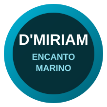
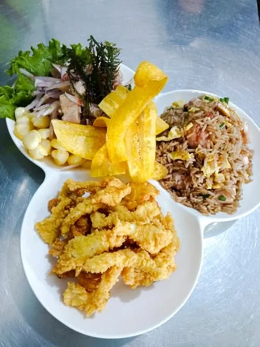

Cevichería con sabor marino, platos frescos y atención en el Callao.
En Cevichería Encanto Marino D'Miriam encontrarás ceviches, jaleas, arroces marinos, sopas y platos criollos con sabor de casa.
Pescado fresco, limón, cebolla y el toque marino de la casa.
Opciones crocantes para compartir en mesa.
Arroz con mariscos y chaufa de mariscos.
Preparaciones calientes con sabor marino.

Av. Alameda, Mercado Amarillo, puesto - Callao
Referencia: Mercado Amarillo, Callao.
Abrir en Google MapsConsulta disponibilidad, precios actualizados o realiza tu pedido por WhatsApp.
Escribir por WhatsApp